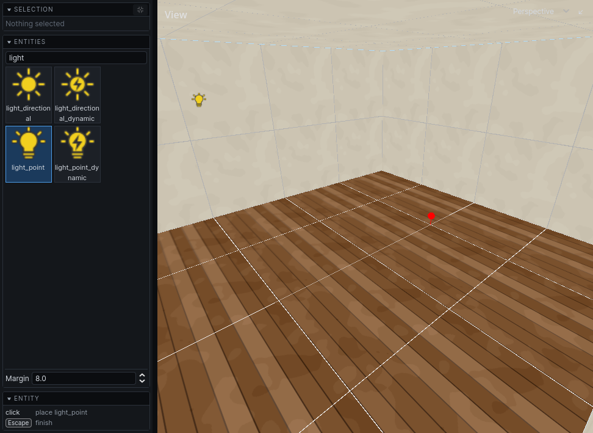
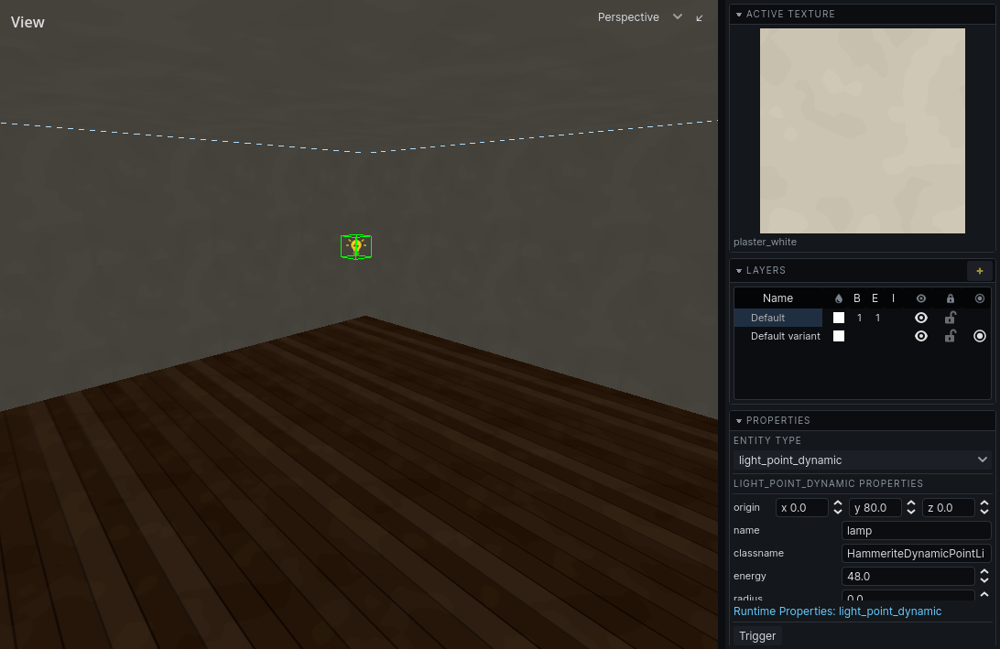

Entities
Entities are the things in a level that are not rock and air: lights, props, sounds, doors. What each kind is is in Entities.
Place a point entity
- Press
CmdE. The entity browser opens in the left panel. - Click a type. Type in the filter field to find one by name.
- Click a surface in a view. The entity is placed on the grid, just off the surface, on the room side.
- Click again to place more. Press
Escwhen done.
Or drag a type from the browser into a view.
Margin in the browser sets how far off the surface new entities stand.
Everything placed in one session of the tool is one undo step, added when you press Esc.

Aim a spot light
A spot light (light_spot, light_spot_dynamic, light_spot_movable) is placed shining straight down. To aim it, select it, press R, and press X, Y or Z to turn it about that axis. The handle at the tip of its arrow only swings it round the vertical. Selected, it draws its cone out to its radius, or a short way when it has none. Its other properties are in Lighting.
Make a brush entity
Doors, water volumes and other things made of brushes are brush entities.
- Draw the brushes in Solid or Detail. Air cannot become an entity.
- Select them.
- Press
CtrlT. - Pick the type in the inspector's Entity type.
Brushes that were in a group leave it and belong to the entity instead. Structural brushes become detail, and they all move onto one layer. Cmd Z undoes the lot: the entity goes, and every brush is structural, grouped and on the layer it was on again.
Edit properties
Select entities and change their properties in the inspector. With several selected, a change goes to all of them. See The interface.
P opens the selected entity's properties in a window of their own.
Move and turn entities like brushes: see Editing.
Run entities in the editor
Entities run their game code in the editor, so you can check a door opens without leaving it.
| Do | How |
|---|---|
| Run selected entities, or all when none are selected | toolbar Play |
| Pause / stop and reset everything | toolbar Pause / Stop |
| Run, pause or reset just this entity | right-click it: Simulate (or Resume), Pause, Stop and Reset |
| Trigger it | Space, or right-click → Trigger |
| Ask it to do something | its action buttons in the inspector, or right-click |
While entities run, the inspector adds a Runtime section with their live values. Your game may add a panel of its own there.
Actions and runtime changes are not in the undo history. Stop, or Stop and Reset, puts them back.
